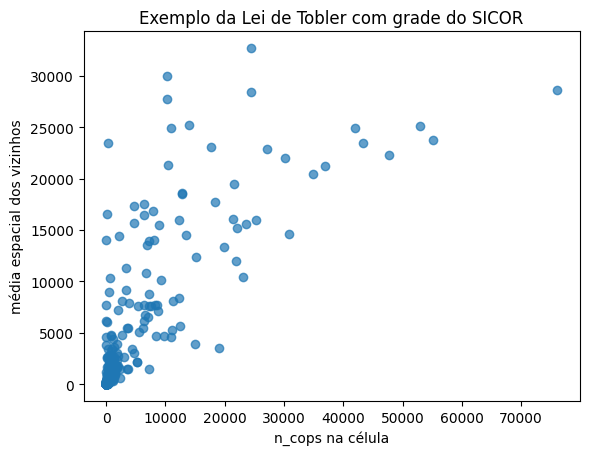
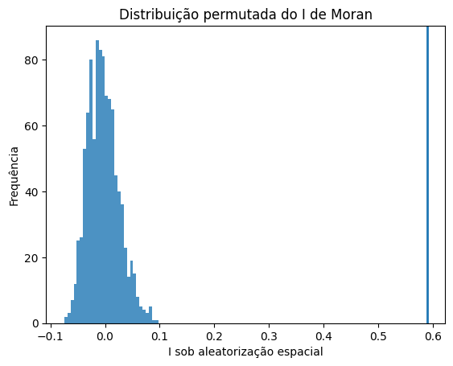
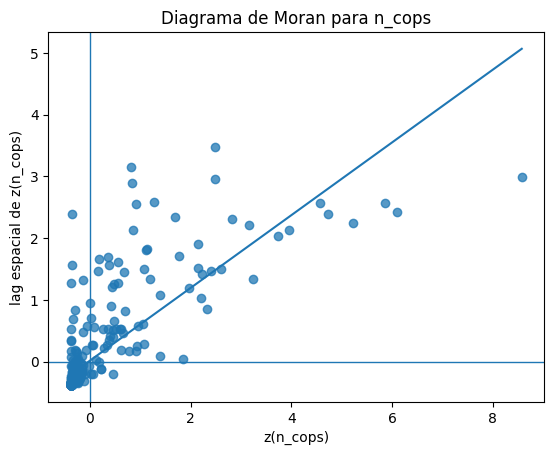
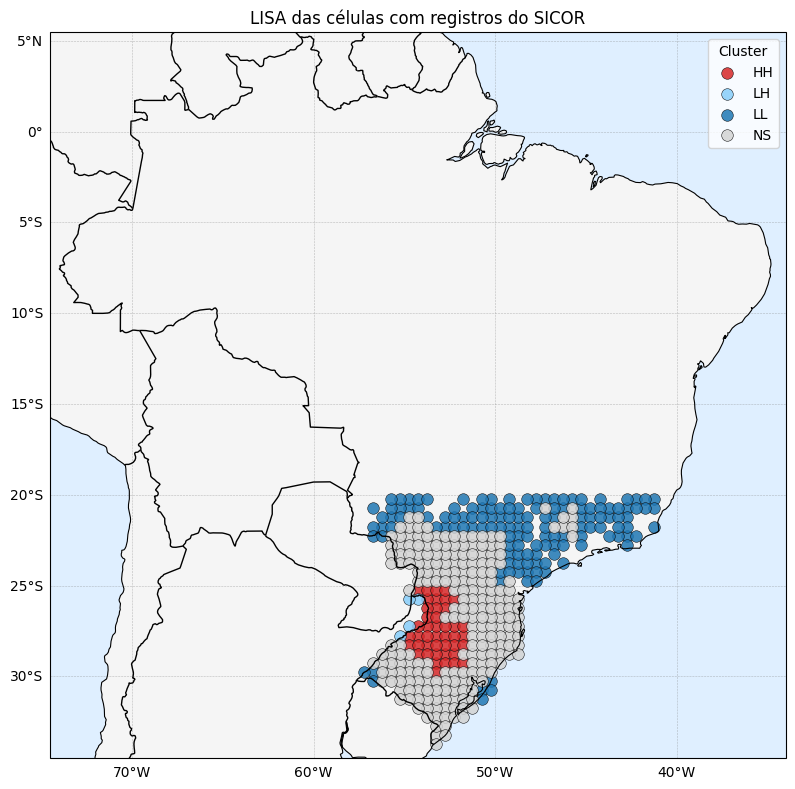
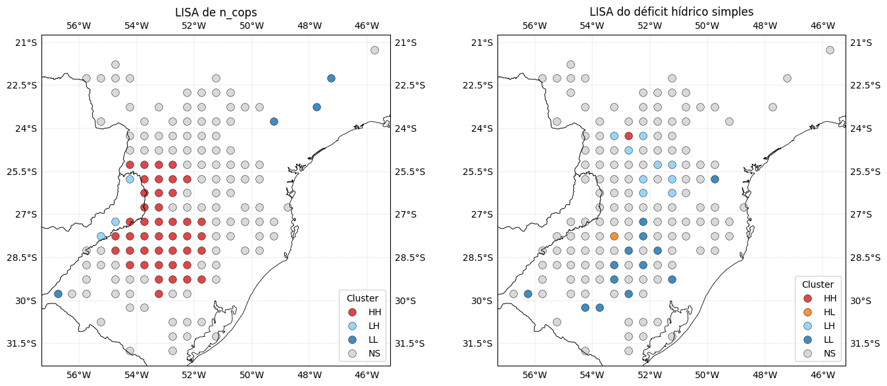
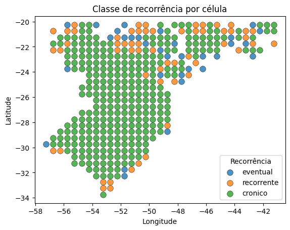

Bloco 0 — exemplo integrado: Tobler → Moran → LISA → MAUP
Este notebook curto serve de demonstração para a primeira aula do Módulo 2 e percorre, em um só fluxo, os dez tópicos da semana:
Lei de Tobler — valor da célula × média dos vizinhos;
I de Moran global com permutações de Monte Carlo;
matriz de vizinhança (KNN com \(k=5\) e \(k=8\));
significância por permutação;
diagrama de Moran;
LISA — clusters HH/LL e outliers HL/LH;
coerência espacial sinistros × clima;
recorrência temporal;
estratificação por agente institucional;
MAUP — sensibilidade à escala.
Premissas
sicor-interest-data.csvno diretório de trabalho;CSVs horários do INMET em
INMET/*/*.CSV;unidade espacial: grade regular (em vez de polígonos municipais), para tornar o exemplo leve e didático.
Dependências
pip install cartopy libpysal esda
from pathlib import Path
import glob, re, unicodedata
import numpy as np
import pandas as pd
import matplotlib.pyplot as plt
import cartopy.crs as ccrs
import cartopy.feature as cfeature
from scipy.spatial import cKDTree
from libpysal.weights import KNN
from libpysal.weights.spatial_lag import lag_spatial
from esda import Moran, Moran_Local
1. carga e padronização
Encapsulamos a leitura do Sicor e dos CSVs do INMET em duas funções
(preparar_sicor e carregar_inmet) — mesma rotina vista em
Aula prática 2 — Sicor + INMET: plausibilidade espacial e GDD da soja.
df_sicor = preparar_sicor('sicor-interest-data.csv')
# Correção das coordenadas (longitudes sem sinal, recorte ao Sul)
df_sicor['longitude'] = df_sicor['longitude'].abs() * -1
df_sicor = df_sicor.loc[
df_sicor['latitude' ][(df_sicor['latitude' ] >= -34) & (df_sicor['latitude' ] <= -20)].index
]
df_sicor = df_sicor.loc[
df_sicor['longitude'][(df_sicor['longitude'] >= -60) & (df_sicor['longitude'] <= -41)].index
]
df_est, meta_est = carregar_inmet('INMET/*/*_S_*.CSV')
df_est_daily = (
df_est
.groupby(['COD', pd.Grouper(freq='D')])
.agg(PREC=('PREC', 'sum'), TEMP=('TEMP', 'mean'),
TMIN=('TMIN', 'min'), TMAX=('TMAX', 'max'))
.reset_index()
)
2. grade regular como unidade espacial
Cada par (lon, lat) é colado a uma célula de \(0{,}5° × 0{,}5°\). Sumarizamos quantas COPs caíram em cada célula:
step = 0.5 # graus
sicor_grade = agregar_em_grade(df_sicor, step=step)
grid_cops = (
sicor_grade
.groupby(['grid_id', 'grid_lon', 'grid_lat'])
.agg(
n_cops=('ref_bacen', 'size'),
risco_medio=('risco_percentual', 'mean'),
area_media_ha=('area_gleba_ha', 'mean'),
n_anos=('ano_emissao', 'nunique'),
n_peritos=('cd_cpf_perito', 'nunique'),
)
.reset_index()
.sort_values('n_cops', ascending=False)
)
3. lei de Tobler na prática
Construímos a matriz de vizinhança KNN (5 vizinhos mais próximos), calculamos o lag espacial e correlacionamos:
w5 = construir_knn(grid_cops, k=5)
grid_cops['lag_n_cops'] = lag_spatial(w5, grid_cops['n_cops'].to_numpy())
corr_tobler = np.corrcoef(grid_cops['n_cops'],
grid_cops['lag_n_cops'])[0, 1]
print(f'Correlação valor × média dos vizinhos: {corr_tobler:.3f}')

Figura 33 - Demonstração visual da Lei de Tobler: a inclinação positiva indica que células com muitas COPs tendem a estar próximas de outras com muitas COPs.
4. I de Moran global e sensibilidade da vizinhança
Comparamos \(k=5\) e \(k=8\) na construção da matriz de vizinhança para checar robustez do resultado:
resumos = []
for k in [5, 8]:
w = construir_knn(grid_cops, k=k)
resumo, _ = resumo_moran(
grid_cops['n_cops'], w,
nome=f'n_cops | k={k}', permutacoes=999,
)
resumo['k'] = k
resumos.append(resumo)
df_moran_global = pd.DataFrame(resumos)[
['variavel', 'k', 'I', 'p_sim', 'z_sim', 'EI', 'permutacoes']
]
Se a conclusão se mantém para ambas matrizes, o resultado é robusto. Se muda, vale rediscutir a definição de “vizinho”.
5. significância por permutação
_, moran_cops = resumo_moran(
grid_cops['n_cops'], w5, nome='n_cops', permutacoes=999,
)
fig, ax = plt.subplots()
ax.hist(moran_cops.sim, bins=30, alpha=0.8)
ax.axvline(moran_cops.I, linewidth=2)
ax.set_title('Distribuição permutada do I de Moran')
plt.show()

Figura 34 - Distribuição permutada do I de Moran (cinza) com o valor observado em destaque (linha vertical). Quando o observado cai fora da nuvem permutada, rejeitamos a hipótese de aleatoriedade espacial.
6. diagrama de Moran
z = (grid_cops['n_cops'] - grid_cops['n_cops'].mean()) \
/ grid_cops['n_cops'].std(ddof=0)
lag_z = lag_spatial(w5, z.to_numpy())
fig, ax = plt.subplots()
ax.scatter(z, lag_z, alpha=0.75)
coef = np.polyfit(z, lag_z, 1)
ax.plot(np.linspace(z.min(), z.max(), 100),
coef[0] * np.linspace(z.min(), z.max(), 100) + coef[1])
ax.axhline(0); ax.axvline(0)
ax.set_xlabel('z(n_cops)'); ax.set_ylabel('lag espacial de z(n_cops)')
plt.show()
print(f'Inclinação estimada: {coef[0]:.4f}')
print(f'I de Moran: {moran_cops.I:.4f}')

Figura 35 - Diagrama de Moran. A inclinação da reta de regressão é o próprio I de Moran. Quadrantes superior-direito e inferior-esquerdo contêm clusters; superior-esquerdo e inferior-direito contêm outliers espaciais.
7. LISA — clusters locais e outliers
lisa = Moran_Local(grid_cops['n_cops'].to_numpy(), w5, permutations=999)
grid_cops['lisa_q'] = lisa.q
grid_cops['lisa_p'] = lisa.p_sim
grid_cops['cluster_cops'] = [classificar_lisa(q, p, alpha=0.05)
for q, p in zip(grid_cops['lisa_q'],
grid_cops['lisa_p'])]
grid_cops['cluster_cops'].value_counts()

Figura 36 - Mapa LISA com células classificadas como HH (vermelho), LL (azul), HL (laranja) e LH (azul claro). O Sul gaúcho aparece como o principal cluster HH na safra analisada.
8. cruzamento sinistros × clima
Cada COP recebe a estação INMET mais próxima (KDTree em coordenadas geográficas):
tree_est = cKDTree(meta_est[['longitude', 'latitude']].to_numpy())
dist, idx = tree_est.query(df_sicor[['longitude', 'latitude']].to_numpy(), k=1)
df_sicor['COD_ESTACAO'] = meta_est.iloc[idx]['COD'].to_numpy()
df_sicor['dist_estacao_km'] = dist * 111.0
# Janela de evento (perito > comunicação)
df_sicor[['janela_ini', 'janela_fim']] = df_sicor.apply(
escolher_janela_evento, axis=1,
)
E somamos chuva no período do evento, agregando por célula:
clima_grade = (
df_evento.pipe(agregar_em_grade, step=step)
.groupby(['grid_id', 'grid_lon', 'grid_lat'])
.agg(prec_evento_med=('prec_evento_mm', 'mean'),
temp_evento_med=('temp_media_evento_c', 'mean'),
tmin_evento_med=('tmin_evento_c', 'mean'))
.reset_index()
)
grid_join = grid_cops.merge(clima_grade, on=['grid_id', 'grid_lon', 'grid_lat'], how='left')
grid_join['deficit_hidrico_simples'] = -grid_join['prec_evento_med']

Figura 37 - Painel com LISA de COPs e LISA de déficit hídrico lado a lado. Onde os dois mapas batem (HH em ambos), temos coerência; onde divergem, vale checar.
Leitura rápida da sobreposição
HH nas COPs + HH no déficit → coerência espacial;
HH nas COPs + NS/LL no clima → ponto para checagem;
NS/LL nas COPs + HH no clima → possível subnotificação.
Este cruzamento não fecha diagnóstico — apenas indica onde olhar mais de perto.
9. recorrência temporal
recorrencia = (
sicor_grade
.groupby(['grid_id', 'grid_lon', 'grid_lat'])
.agg(anos_com_cop=('ano_emissao', 'nunique'),
total_cops =('ref_bacen', 'size'))
.reset_index()
)
recorrencia['classe_recorrencia'] = pd.cut(
recorrencia['anos_com_cop'],
bins=[-np.inf, 1, 3, np.inf],
labels=['eventual', 'recorrente', 'cronico'],
)

Figura 38 - Classe de recorrência por célula. Áreas crônicas (4+ anos com COPs) merecem investigação adicional, mesmo quando o I de Moran global é baixo.
10. estratificação por agente
Repetimos o I de Moran apenas para as COPs do perito de maior volume, para verificar se há padrão espacial anômalo específico desse agente:
top_perito = df_sicor['cd_cpf_perito'].value_counts().index[0]
df_agente = df_sicor[df_sicor['cd_cpf_perito'] == top_perito]
agente_grade = agregar_em_grade(df_agente, step=step)
grid_agente = (agente_grade
.groupby(['grid_id', 'grid_lon', 'grid_lat'])
.agg(n_cops_agente=('ref_bacen', 'size'))
.reset_index())
w_ag = construir_knn(grid_agente, k=5)
_, moran_ag = resumo_moran(grid_agente['n_cops_agente'], w_ag,
nome='agente', permutacoes=999)
11. MAUP — sensibilidade à escala
Recomputamos o I de Moran para grades de \(0{,}5°\) e \(1{,}0°\) — a conclusão pode mudar drasticamente:
comparacao_maup = []
for step_tmp in [0.5, 1.0]:
grade_tmp = agregar_em_grade(df_sicor, step=step_tmp)
grid_tmp = (grade_tmp
.groupby(['grid_id', 'grid_lon', 'grid_lat'])
.agg(n_cops=('ref_bacen', 'size'))
.reset_index())
w_tmp = construir_knn(grid_tmp, k=5)
resumo_tmp, _ = resumo_moran(grid_tmp['n_cops'], w_tmp,
nome=f'grade_{step_tmp}',
permutacoes=999)
resumo_tmp['step_graus'] = step_tmp
resumo_tmp['n_unidades'] = len(grid_tmp)
comparacao_maup.append(resumo_tmp)
df_maup = pd.DataFrame(comparacao_maup)
Fechamento
Este notebook é o “esqueleto operacional” da semana — em uma só sessão de aula percorremos:
valor × lag espacial → Lei de Tobler;
medida única do padrão global → I de Moran;
mudança do critério de vizinhança → sensibilidade da matriz;
histograma permutado → significância;
gráfico valor × lag → diagrama de Moran;
mapa HH/LL/HL/LH → LISA;
cruzamento com precipitação → coerência SICOR × clima;
contagem entre anos → recorrência;
recorte por perito → agente institucional;
duas grades → MAUP.
Próximos passos
Bloco 1 — KDE e I de Moran global (município) — visualização KDE + I de Moran global em unidade municipal.
Bloco 2 — LISA, MAUP, falácia ecológica e Getis-Ord Gi* — LISA, Gi* e MAUP em detalhe.
Bloco 3 — IDW, spline RBF e krigagem ordinária — interpolação de variáveis climáticas.